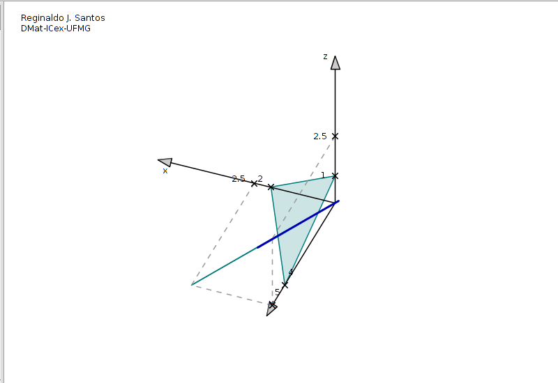

Animação do esboço de uma reta como interseção de dois planos
Animação do esboço de uma reta como interseção de dois planos
A reta é a interseção dos planos $$ \begin{array}{llll} \pi_1\,:&2x+y+4z-4&=&0\\ \pi_2\,:&2x-y+2z&=&0. \end{array} $$
